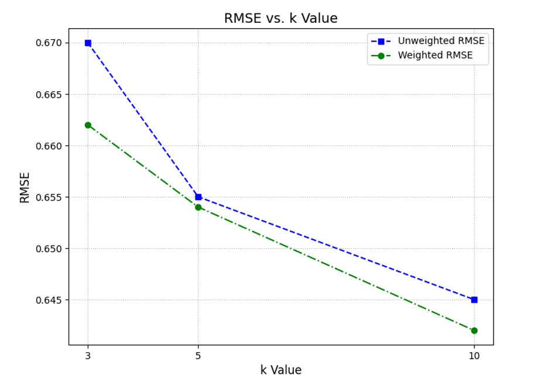
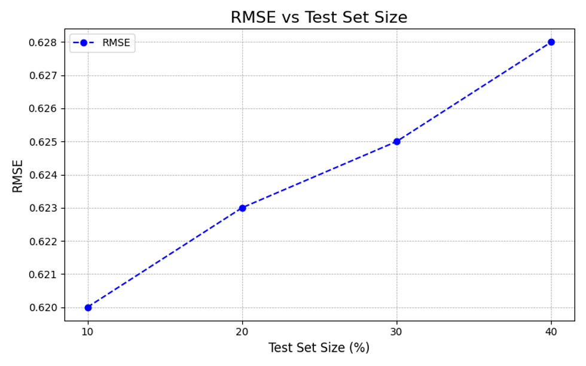
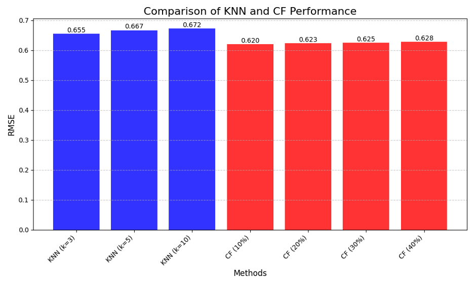

Movie Recommendation System Using KNN and Collaborative Filtering
1 Introduction
In today’s world of personalized content, recommendation systems play a crucial role in enhancing user experiences. From Netflix suggesting your next favorite show to Amazon recommending products you’ll love, these systems rely on sophisticated algorithms to predict user preferences.
This project focuses on building a Movie Recommendation System using:
1. K-Nearest Neighbors (KNN): Identifies similar users or movies to make predictions.
2. Collaborative Filtering (CF): Leverages user-item interaction data to provide recommendations.
The MovieLens dataset was used as the foundation for this project, providing a robust collection of movie ratings from diverse users.
2 Methods
2.1 Dataset
The dataset used for this project was sourced from the MovieLens platform. Key characteristics include: - User-Item Ratings: Numerical ratings assigned by users to movies. - Diversity: Wide range of movies across genres, enabling a comprehensive analysis. - Sparsity: Like most recommendation datasets, it is sparse, with many movies unrated by users.
2.2 Techniques
2.2.1 K-Nearest Neighbors (KNN)
- Similarity Metric: Euclidean distance was used to calculate similarity between users or movies.
- Prediction Methods:
- Unweighted KNN: Averages the ratings of the nearest neighbors.
- Weighted KNN: Applies a weight based on the distance of neighbors to provide more accurate predictions.
- Parameter Testing: The number of neighbors (
k) was varied (3, 5, 10) to evaluate the impact on prediction accuracy.
2.2.2 Collaborative Filtering (CF)
- Similarity Calculation: Cosine similarity was used to determine the closeness between movies based on user ratings.
- Prediction Method: A weighted average of ratings for similar movies was used to predict ratings for unrated movies.
- Train-Test Splits: Evaluations were performed with train-test splits of 10%, 20%, 30%, and 40% to test the scalability and robustness of the model.
3 Results
3.1 K-Nearest Neighbors (KNN)
The performance of KNN was evaluated using Root Mean Square Error (RMSE) across different k values:
| k Value | RMSE (Unweighted) | RMSE (Weighted) |
|---|---|---|
| 3 | 0.655 | 0.642 |
| 5 | 0.667 | 0.654 |
| 10 | 0.672 | 0.660 |

3.1.1 Key Observations
- Weighted KNN consistently outperformed Unweighted KNN.
- Smaller values of
k(e.g.,k=3) provided slightly better accuracy, as larger neighborhoods introduced less relevant data.
4 Collaborative Filtering Accuracy
4.1 Performance Across Train-Test Splits
Collaborative Filtering (CF) was evaluated using Root Mean Square Error (RMSE) across different train-test splits to assess its robustness and scalability. The results are summarized below:
| Test Set Size (%) | RMSE |
|---|---|
| 10 | 0.620 |
| 20 | 0.623 |
| 30 | 0.625 |
| 40 | 0.628 |

4.1.1 Key Observations:
- Consistency: CF demonstrated stable performance with minimal RMSE variation across different train-test splits.
- Scalability: The model’s consistent accuracy highlights its ability to handle varying dataset sizes effectively.
- Comparison with KNN: CF outperformed KNN in RMSE, proving its suitability for large, sparse datasets like MovieLens.

5 Conclusion
5.1 Summary of Findings
This project implemented a movie recommendation system using two distinct techniques:
1. K-Nearest Neighbors (KNN): - Leveraged user similarity to predict ratings. - Weighted KNN outperformed unweighted, with smaller neighborhoods providing better accuracy.
2. Collaborative Filtering (CF): - Utilized user-item interactions to predict preferences. - Demonstrated consistent accuracy across varying dataset sizes.
5.1.1 Key Strengths
- Collaborative Filtering (CF):
- Outperformed KNN in both accuracy and scalability.
- Robust across different train-test splits, making it suitable for large datasets like MovieLens.
- KNN:
- Provided insights into how user similarity influences predictions, highlighting the role of neighborhood size.
5.2 Conclusion
This project illustrated the strengths and limitations of KNN and CF techniques, offering a robust foundation for building recommendation systems. While CF emerged as the more scalable and accurate approach, KNN’s interpretability and simplicity remain valuable for specific applications.
6 Future Directions
The recommendation system can be enhanced in the following ways:
6.0.1 1. Advanced Techniques
- Matrix Factorization: Use techniques like Singular Value Decomposition (SVD) to reduce dimensionality and improve accuracy.
- Deep Learning: Implement neural network-based models, such as Autoencoders, to capture complex relationships.
6.0.2 2. Contextual Recommendations
- Incorporate metadata, such as:
- Timestamps: To provide time-based recommendations.
- Genres and Tags: To enhance personalization.
- User Demographics: For tailored suggestions.
6.0.3 3. Hybrid Models
- Combine the strengths of KNN and CF into hybrid systems:
- Use CF for scalability and KNN for personalized adjustments.
- Integrate content-based filtering for better performance in cold-start scenarios.
6.0.4 4. Real-Time Systems
- Implement real-time data pipelines for dynamic updates and predictions.
- Leverage streaming frameworks like Apache Kafka or Spark Streaming to handle real-time user interactions.
7 References
- GroupLens Research. “MovieLens Datasets.” MovieLens.
- Sarwar, B., et al. “Item-based collaborative filtering recommendation algorithms.” Proceedings of the 10th International Conference on WWW, 2001.
- Pedregosa, F., et al. “Scikit-learn: Machine learning in Python.” Journal of Machine Learning Research, 2011.
- Géron, A. (2019). Hands-On Machine Learning with Scikit-Learn, Keras, and TensorFlow (2nd edition). O’Reilly Media.
- Python Software Foundation. Python Programming Language.
- Apache Software Foundation. Apache PySpark.
- Resnick, P., & Varian, H. R. “Recommender Systems.” Communications of the ACM, 40(3), 56–58, 1997.
- Zhang, Y., & Chen, X. “Explainable Recommendation: A Survey and New Perspectives.” Foundations and Trends® in Information Retrieval, 14(1), 1–101, 2020.